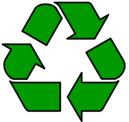

Раздельный сбор
Многие слышали про удивительную ленту Мёбиуса - математический объект, модель которого легко сделать из бумаги.

Для этого надо взять бумажную полоску и склеить её концы в кольцо, но не так, как мы обычно привыкли, а предварительно повернув один из концов на 180 градусов.
Думаю, надо добавить картинку с лентой Мёбиуса.Вроде бы ничего не поменялось, просто получилось перекрученное колечко. Но у него только одна поверхность! Это можно легко проверить, начав раскрашивать кольцо, не отрывая карандаша от бумаги и не переходя грани кольца.
Думаю, надо добавить картинку с лентой Мёбиуса.Изображения ленты Мёбиуса окружают нас везде. Удивлены? Оказывается, что лента Мёбиуса выступает не только в качестве увлекательного математического пособия, но и является международным символом вторичной переработки сырья.
А вот этот символ на привычных вещах:
Фотоньки с треугольничком на разных видах сырья.Как видите, этот символ часто упрощают до треугольника из стрелочек. Кроме того, иногда внутри этого треугольника написаны какие-то цифры, а внизу иногда пишут какие-то буквы. Что означает эта шифровка?
И цифры, и буквы обознают материалы, из которых сделана вещь. Это особенно важно для переработки вторсырья.
| Семейство кодов | Фотопримеры | Материал |
|---|---|---|
| 1-7 | Различные виды пластика | |
| 20-23 | Макулатура (без примесей) | |
| 40-41 | Металлы | |
| 50-51, 60-69 | Органические отходы природного происхождения (без макулатуры) | |
| 70-79 | Стекло | |
| 80-85 | Композиционные материалы на основе бумаги | |
| 90-98 | Композиционные материалы на основе пластика | |
| Батареи и аккумуляторы |